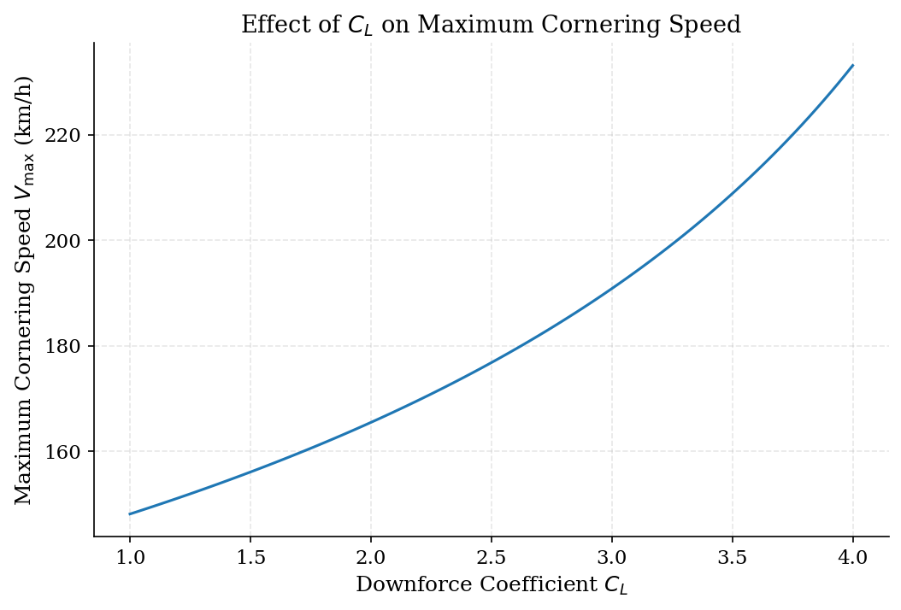
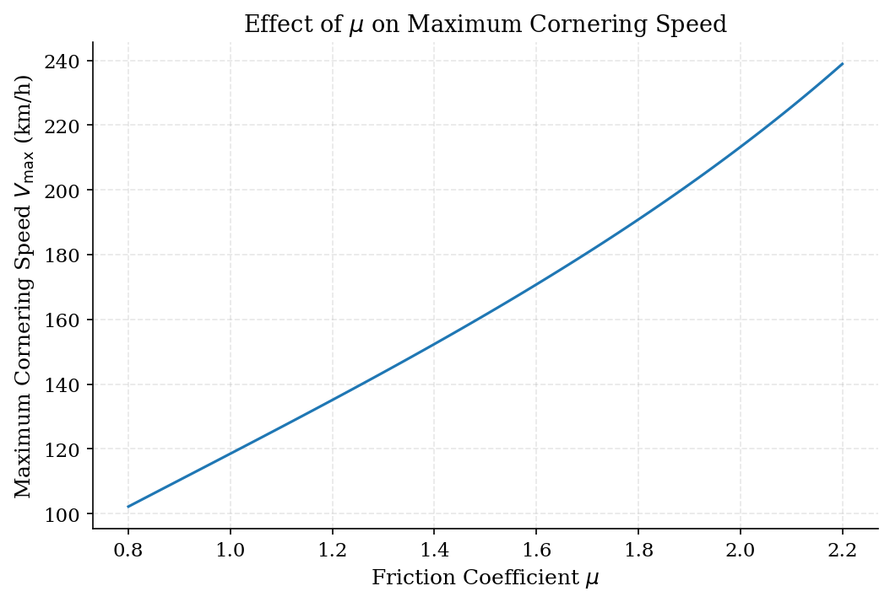
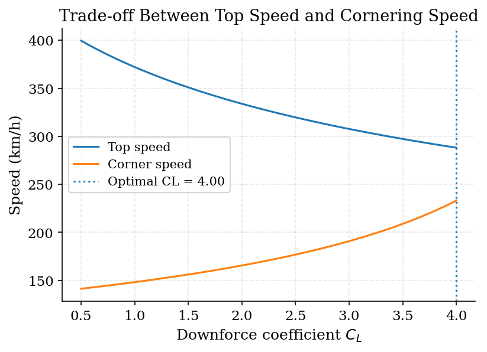
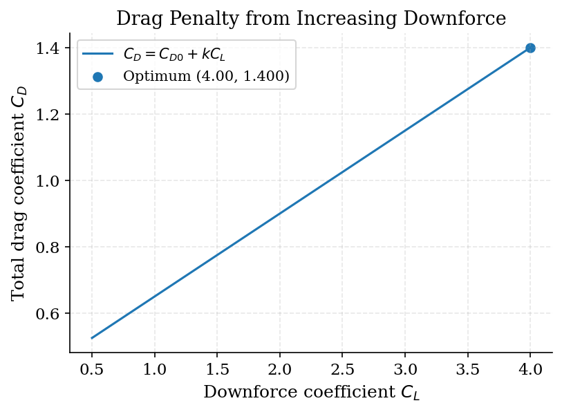
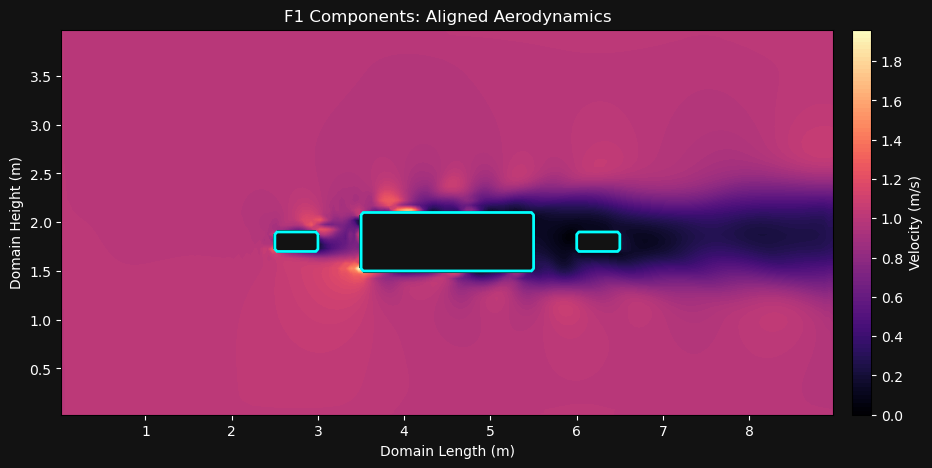

PHYS3211 · Final project · March 2026
F1 Vehicle Dynamics
Downforce, grip, and cornering.
For my PHYS3211 final project, I explored how downforce and tire grip affect cornering performance in a simplified vehicle model. The figures show the cornering limits and the trade-off between straight-line speed and cornering speed.
Select a figure to enlarge it; chart labels are in English.
Cornering performance
How downforce and grip affect cornering
The cornering model compares the centripetal force needed to follow a bend with the lateral force available from the tires. Downforce adds to the normal load, raising the grip limit under the assumed constant friction coefficient.
For an 80 m corner, increasing either downforce or tire friction raises the predicted grip-limited speed. This is a force-balance limit; it does not simulate corner entry, braking, or the power needed to sustain that speed.


Performance trade-off
Straight-line speed and cornering speed
I assumed CD = 0.40 + 0.25 CL to compare the two effects of increasing downforce: a higher grip-limited cornering speed and a lower power-limited straight-line top speed. The curves show predictions from the simplified model, using 88% drivetrain efficiency and no rolling resistance.
The original figure labels CL = 4.00 as “Optimal”. This refers only to the lowest sampled value of the simplified lap-time proxy over CL = 0.5–4.0. It lies at the scan boundary and does not establish a global optimum. The two speed curves alone do not define an optimal setting.


2D flow prototype
Exploring a simple flow field
Alongside the vehicle models, I built a separate 2D flow prototype on a staggered grid, using a pressure-projection step and Numba-accelerated calculations. Three aligned rectangles represent simplified vehicle components. The saved output visualizes the computed velocity field around them.
- Grid
- 180 × 80
- Domain
- 9 × 4 m
- Time steps
- 3,000
Boundary treatment, mass conservation, and mesh convergence have not yet been verified. At an inlet speed of 1 m/s and kinematic viscosity of 0.004 m²/s, the Reynolds number based on the 2 m body is about 500. This is an unvalidated prototype illustration, not a real-car aerodynamic prediction. It supplies no drag or downforce coefficients to the vehicle models above.

How to read these results
These figures use simplified steady-state models. The cornering estimates assume a constant tire friction coefficient, and the trade-off model prescribes a linear drag–downforce relationship. They do not model acceleration, braking, tire load sensitivity, or combined longitudinal and lateral tire forces. The results describe trends within these assumptions, rather than calibrated predictions for a real F1 car.